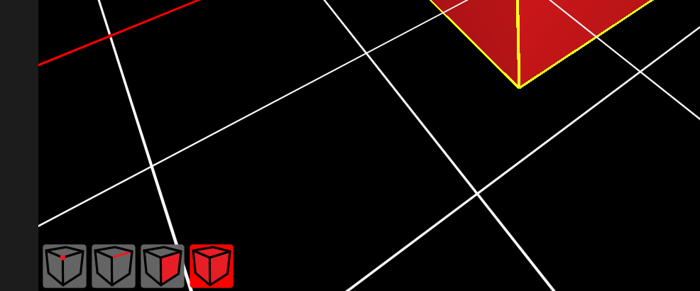
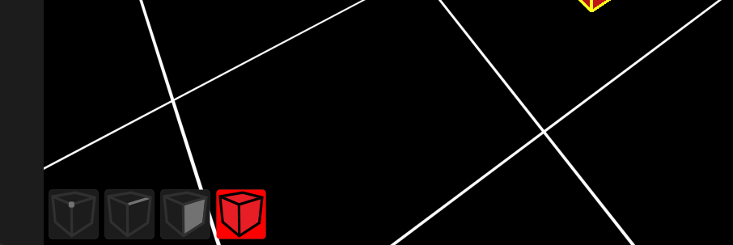
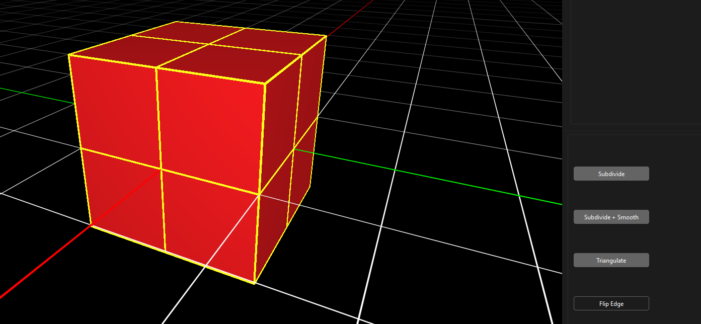

Elements
Introduction
3D modeling at its simplest is the manipulation of elements. In ABC3D there are four different types of elements:
- Object
- Face
- Edge
- Vertex

Restrictions
Not every tool works on every element type. When changing tools you might find that you cannot select some element types, this is because some operations are not defined on that element type.
For example, you cannot rotate a vertex. This is because it is simply a point in space, with no rotation defined.

Adding Elements
To create more realistic and higher resolution models, you need to add more elements. You cannot get an adequate amount of control using just a base cube which has 8 vertices total.
There are some tools available to help with that:
- Subdivision: Adds more vertices and edges.
- Subdivision & Smooth: Adds more vertices and edges, and also deforms the model to look smooth.
- Triangulation: Splits faces into triangles.
- Loop Cut: Adds more edges.
- Knife: Cuts an edge.
